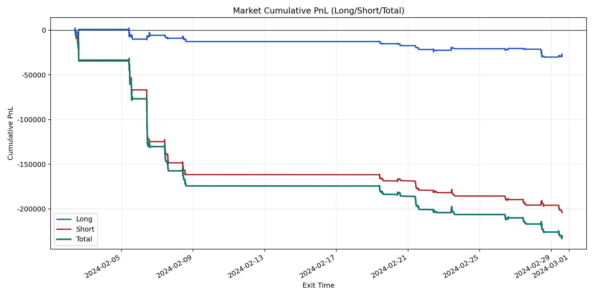
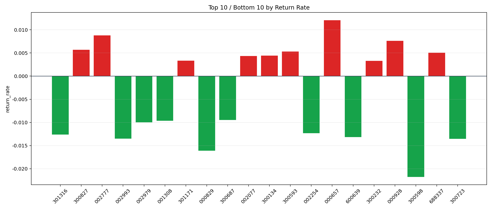

| repo_root | /home/haoranyou/data/output/dynamic_AUM_TAKER_index1000 |
|---|---|
| period_months | 1 |
| period_label | 2024-02-02_to_2024-02-29 |
| start_time | 2024-02-02 09:46:42 |
| end_time | 2024-02-29 14:42:17 |
| n_trades | 8161 |
| n_symbols | 271 |
| total_pnl | -230985.09740000087 |
| long_total_pnl | -26924.983549999302 |
| short_total_pnl | -204060.11385000157 |
| total_entry_notional | 141835795.0 |
| long_entry_notional | 44333035.0 |
| short_entry_notional | 97502760.00000001 |
| total_return_rate | -0.0016285388141970853 |
| long_return_rate | -0.0006073345429655178 |
| short_return_rate | -0.0020928650004369263 |
| top_symbols_by_return | ["000657", "002777", "000928", "300827", "300593", "688337", "300134", "002077", "301171", "300232"] |
| bottom_symbols_by_return | ["300598", "000829", "300723", "002993", "600639", "301316", "002254", "002979", "001308", "300687"] |

